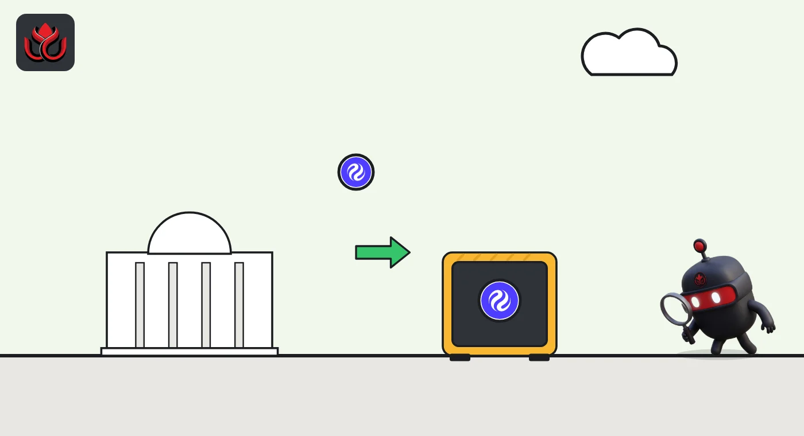

Canary's staked INJ ETF heads to Nasdaq as INJC. Fees will take up to 30% of rewards
Canary's Staked INJ ETF filed its final prospectus on November 4. The fund plans to stake most of its Injective tokens and keep 70% of the rewards. INJ rose 2.5% in a day the rest of the market fell.
Key points
- The Canary Staked INJ ETF filed a final prospectus with the SEC dated November 4, 2026, for shares listed on The Nasdaq Stock Market under the ticker INJC.
- The sponsor expects to stake at least 90% of the fund's INJ. Staking fees are expected to take 30% of rewards, and the sponsor fee is 1.10% a year.
- INJ traded at $8.22 at 12:44 a.m. ET on November 6, up 2.5% in 24 hours and 11.8% in a week, CoinGecko shows.
What was filed
Canary's Injective fund reached the last step of its SEC paperwork this week. The trust filed a final prospectus (Form 424B3, the document a fund uses to sell shares once its registration is in place) dated November 4, 2026. It names the listing venue as The Nasdaq Stock Market and the ticker as INJC.
It came after two amended registration statements in quick succession, one in late October and one in early November. The trust itself was formed on June 9, 2025.
The prospectus says there was no public market for the shares before this offering and that they are expected to list subject to notice of issuance. We could not confirm the first day of trading on a primary source by the time of publication, so we do not state it.
How the fund works
INJ is the token of Injective, a blockchain built for trading apps. Holders can stake it, which means locking it up to help secure the network in return for rewards.
The fund holds INJ directly and plans to stake most of it. In normal conditions, the sponsor expects nine-tenths or more of the fund's tokens to be staked, the prospectus says. Staking is done through one or more staking providers chosen by the sponsor. The document does not name them.
- Custodian: BitGo Bank & Trust, N.A. holds the fund's INJ.
- Administrator and transfer agent: U.S. Bancorp Fund Services, LLC, while U.S. Bank, N.A. holds the cash.
- Share creation: large firms create and redeem shares in baskets of 10,000.

What it costs
There are two layers of cost. The sponsor fee is 1.10% a year of the fund's INJ. The sponsor may waive part or all of it but says it has no obligation to.
Staking fees come on top. They are expected to be 30% of staking rewards and will not go above that, leaving the fund with 70% of what it earns from staking.
The first money in comes from the project side. The Injective Foundation, as seed investor, intends to buy up to $15 million of shares at $25.00 each. At that price, $15 million would be 600,000 shares (our math).
Where staking rewards go
%
Separate from the 1.10% yearly sponsor fee. Source: Canary Staked INJ ETF, Form 424B3 (November 4, 2026).
The INJ price
CoinGecko showed INJ at $8.22 at 12:44 a.m. ET on November 6, up 2.5% in 24 hours and 11.8% over seven days. That came on a day when bitcoin lost about 6%. INJ's market value was about $822 million, ranked 81st at the time, with $177 million traded in 24 hours. The token is still far below its record of $52.62 from March 14, 2024.
LC Insight analysis
This section is our reading of the facts above, not a statement of fact.
- We think the staking design is the point of this fund: it tries to pass on part of the network yield on top of the price, and fees take a large share of that yield before holders see it.
- A seed of up to $15 million from the Injective Foundation is small next to INJ's roughly $822 million market value. Real demand will show only in later creations of new shares.
- INJ's gain on a down day may reflect attention around the listing. One day of price action does not show lasting demand.
What's next
- The first trading day and early volume of INJC on Nasdaq
- Which staking providers the fund uses
- Whether the sponsor waives any of its 1.10% fee
Disclaimer. This article is based on public information and the sources listed below as of the update time shown. It is for information only and is not investment, legal or tax advice. Figures may change as companies and authorities publish new data.